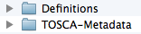

Component implementation
Target: Middleware experts, operations teams.
Goal: Explain how to implement a type. This tutorial follows the component design tutorial and we will describe how to implement the component designed in the previous tutorial. In this tutorial we also covers how the component archive can be added and tested through ALIEN.
Pre-requisite: A git repository will hold the source code for the component archive. We will also use a Jenkins CI instance in order to demonstrate how we can continuously test our archives and develop components following quality best-practices.
Prepare the archive
Elements in TOSCA and ALIEN are defined in definitions files that can be packed in a Cloud Service Archive (CSAR). The first task therefore is to prepare the directory structure of our Cloud Service Archive.

Then we create a tomcat-definition.yml file that will contain the actual tomcat node type definition.
Before starting to fill-in the file we will first create the ALIEN-META.yaml file that must be in the TOSCA-Metadata folder of our archive directory structure.

This file defines the archive name and version as well as the location of the definitions files that the archive contains. This is the entry point of the archive. The content of the file is the following:
# Define the current archive id and version.
name: "fastconnect-tomcat-types"
version: "1.0"
license: "Apache v2.0"
created_by: "FastConnect"
# List of definitions file in the archive.
definitions:
- /Definitions/tomcat-definition.ymlNow that we have a cloud service archive with a definition file, we can edit it to define TOSCA elements. In our case we will focus on creating types.
When creating type it is important to correctly defines the meta-informations of the type, and to try to reuse existing nodes, capabilities and requirements.